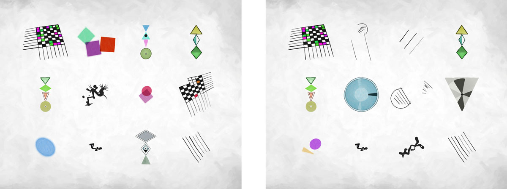
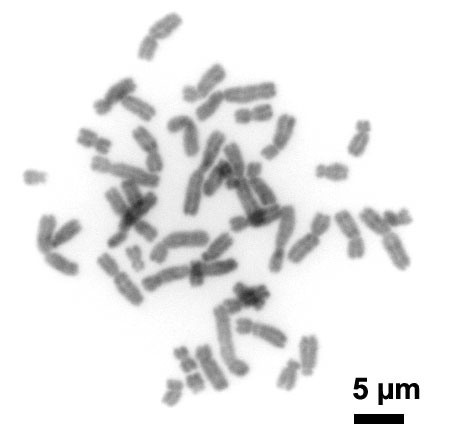

This article is available in Romanian thanks to Irina Vasilescu and in Czech thanks to Barbora Lebedova.
This article is part of a series documenting my project to make artwork from DNA. In the last article I showed off what the artwork looks like. In this post I’ll explain how I analyse an individual’s DNA to extract the information needed for an artwork.
It’s going to get quite technical, but I’ve tried to include enough information that the interested layman can understand it too, perhaps with a little googling.
A brief recap. Right back at the start of this project I decided that my genetic artworks will consist of a number of distinct shapes. The more related two people are, the more objects will appear in both their artworks. Have a look at these two artworks:

Each of the 12 shapes has a unique personality and can easily be distinguished from the others. A few seconds looking at both artworks above and you can see that some shapes appear in the same position in both artworks (e.g. the top left shape) and some are unique to each (the bottom left shape). This is what you’d expect the artworks of two siblings to look like.
Let’s say we have a collection of ten thousand unique shapes that each have a sufficiently distinct personality that it’s easy to recognise when the same shape appears in two paintings. Exactly how we create those shapes is a subject for another post. The task at hand is to take your DNA and boil it down into a list of numbers between 1 and 10,000, so that you share more of the numbers with a close relative than with an unrelated person.
I call this list of numbers the DNArtwork signature. It is safe to share publicly since it contains no sensitive information, except of course that if two people both share their DNArtwork signatures then you can tell how related they are. Here you go, here’s mine:
9083, 2302, 1083, 1735, 5474, 1728, 9925, 1231, 95, 7831, 1526, 1505, 729, 4866, 3778, 2161, 20, 8178, 3972, 3103, 9332, 9859, 9757
My algorithm for creating the DNArwork signature is, as far as I’m aware, the only really original idea I’ve contributed to this project, and it’s what sets this project apart from other artwork created from DNA.
Part 1: a quick primer on SNP genetics
In order to understand the description of the DNArtwork signature algorithm later in this article, you need to know some basics about DNA. If you think that SNP stands for Scottish National Party then you should read this section.
DNA is a massive molecule made from a string of smaller molecules called nucleotides. There are 4 nucleotides: Adenine, Cytosine, Guanine and Thymine, referred as A, C, G and T. Each nucleotide is about 13 atoms in size, think of them as the letters that spell out sentences in a coded genetic language.
Your genome is about 3 billion letters long and split up into 23 lengths of DNA called chromosomes. Chromosomes are large enough that you can see them under a microscope, and they look like this:

Because DNA molecules are continuous strings of letters, it’s possibly to identify any position on that chromosome by counting from one end of the chromosome, so for example at position 8,907,307 on chromosome 3 you have a A. This position is called a locus, or loci in plural. Each chromosome is roughly symmetrical, having two copies of your DNA. One copy comes from your mother and the other from your father, and they’re almost identical. In fact, your DNA sequence is almost identical to every other human – only about one in 300 loci have been found to vary between individuals.
Earlier I told you that at position 8,907,307 on chromosome 3 you have an A, and I could do that because position 8,907,307 on chromosome 3 is one of those boring locations that always has the same letter in humans. Everyone has an A, and for that reason nobody has thought to call this locus anything other than “position 8,907,307 on chromosome 3”. The locus next door however is a different beast. Position 8,907,308 on chromosome 3 has a “Single Nucleotide Polymorphism” or SNP for short, meaning that it has been observed to be different between some people. This particular locus can have either an A or a G, which are referred to as the two possible alleles. Since you have two copies of your DNA one from each parent, you can have either two As, two Gs, or one of each. This makes the locus interesting enough that scientists have given it the pithy name rs180498, to save them from having to say “position 8,907,308 on chromosome 3” all the time.
Like most SNPs, we have no idea what rs180498 does, or indeed if it does anything at all, so it has an extremely boring entry in SNPedia. Some SNPs are more interesting, like rs1815739 which can make you a better sprinter, or rs7495174 which can change your eye colour.
It’s rare that both alleles of an SNP will be equally common. The more common allele is called the major allele and the less common one the minor allele. In the case of our boring SNP rs180498, the minor allele is A with a frequency of 0.167, meaning that 16.7% of DNA strands will have an A and the remaining 88.3% will have a G. These frequency figures are averages, and may vary between populations. In fact, our boring allele rs180498/A has a frequency of 13% among western Europeans and 41% among Japanese people, according to the 1000 Genomes project.
The DNArtwork signature algorithm relies on looking for relatively rare alleles – ones with a minor allele frequency of around 2%. I call these “marker alleles” because having one is a distinctive feature of your genome that can be used to distinguish you from others.
OK, now you know enough about DNA to follow how the DNArtwork signature algorithm works.
Part 2: the DNArtwork Signature Algorithm
The algorithm consists of a preparation phase that is done once before anybody is tested, then an analysis stage that is done on a person’s DNA to generate their DNArtwork signature.
Preparation phase
Generate a list “marker alleles” – SNPs with low minor allele frequencies across all ethnicities. I use these steps:
- Let
Nbe the length of the list of numbers that is the DNArtwork signature andMbe the maximum value of each number. These will be chosen based on the creative requirements of the project, and for my projectN=23andM=4600because each artwork has 23 shapes and there are 4600 different possible shapes. - Start with the set of SNPs that are tested by all of the genetic testing companies that the project must support. In my case it’s 23andme, ancestry.com and National Genographic. All of these companies test a slightly different set of SNPs but there is a large overlap.
- Using population frequency data from the 1000 Genomes project via HapMap, discard any SNPs with a minor allele frequency less than 1% in any ethnicity. This is because DNA tests are not perfectly accurate, so the rarer an allele is the more likely that its appearance in your results is a testing error not a real result. This is Bayes’s Theorem and is an important consideration when testing for rare medical conditions.
- If
N=23then use actual chromosomes for this process. Otherwise divide the genome intoNequal length sections and consider these to be “chromosomes” for the purposes of the rest of this algorithm. - Sort the alleles in each chromosome by the highest minor allele frequencies in any HapMap populations, with rarer alleles first. Using the highest frequency is important – if we used the average frequency, we may end up with markers that are rare on average but very common among Koreans for example, so that every Korean person will predictably share a number in their DNArtwork signature.
- Take the first
M÷Nalleles from each chromosome. - Calculate the probability that an individual will fail to have any marker allele for at least one chromosome. * If this probability is unacceptably high, either increase
Mor return to step 6 but take every other allele, or every third allele, or every nth allele in order to incorporate more common markers. - Randomly assign an identifier number between 1 and
Mto each allele, so that each number is used for exactly one allele. This randomisation step means that, even if all numbers are not equally common, the numbers are at least approximately evenly distributed between 1 andM.
The use of distinct M and N values and the random assignment of the identifier number means that DNArtwork signatures are not comparable between creative projects that use this algorithm, unless they have cooperated to share the preparation phase of the algorithm.
* When combining independent probabilities, if the chance of an event happening at an opportunity is P, the chance of it happening twice in two consecutive opportunities is P2. The chance of any individual not having a specific marker allele is 1-frequency, so the chance of an individual not having any marker is the product of 1-frequency for each marker on the chromosome. For example, if you have 200 markers each with frequency 0.02, then the chance of failing to have one marker is 1-0.02 = 0.98 = 98%, and the chance of failing to have all 200 markers is 0.98200 = 0.018 = 1.8%.
Analysis phase
Given a subject’s DNA test results:
- Perform validation on the results file to make sure that it contains sensible data. In my case I check that the file has a valid result for at least 50% of the marker allele SNPs. Lower values may indicate a corrupted input file, contaminated or non-human DNA used for the testing process, laboratory error, or any of the other fun fun causes of failure that DNA testing companies have to deal with on a daily basis.
- Take the results for chromosome 1 only
- Proceed through the list of marker alleles until you find a SNP for which the subject has at least one copy of the minor allele.
- If you get to the end of the list and there are no matching alleles, choose the last allele on the list. This should happen very rarely*.
- Append the identifier of that allele to the DNArtwork signature list.
- Do the same for the rest of the chromosomes until you have a list of N numbers
Real-world performance
The Personal Genome Project is a collection of DNA testing results kindly released by members of the public for the benefit of researchers. It contains hundreds of individuals, and a few full families.
Firstly, I downloaded the DNA test results of 30 people and generated genetic signatures for each of them. I looked for marker alleles that appeared more frequently than I’d expect by chance. If every person had a unique set of 23 numbers, I’d have 23 × 30 = 690 distinct numbers. In fact I had 263, indicating that each number appears about 2.5 times among the 30 subjects. The most common number appeared in 30% of subjects but there are relatively few of these common numbers: and 90% of the numbers appear in less than 10% of subjects. I was happy with these figures. Some excessively common numbers are to be expected since my minor allele frequency data is based on the 1000 Genomes project which only provides an estimate of actual global frequencies. The important thing here is that there are no numbers that reliably appear in most subjects.
Secondly, I downloaded two sample families, one parent with two children and one grandparent, parent, child trio. On average, these family members shared 40% of their signature numbers with close members of family, and as expected the grandparent/grandchild pair shared slightly less – 30%. Between families, subjects shared 15% of their numbers. Since both families were western ancestry Americans, some relatedness is not unexpected. Again, I’m pretty happy with these figures.
Patent / copyright declaration
As far as I can tell, under UK and EU law, algorithms are not subject to copyright and not eligible for patent protection. I therefore have no issue with anyone creating a software implementation of the algorithm based on the description in this article.
One purpose of publishing this algorithm is to define some prior art, should anyone attempt to assert ownership of it in future. This algorithm was developed independently by me (Bernie Sumption) in August 2013, first implemented in software in August 2016, and published (in this article) on 14th December 2016.
You ROCK and this is AMAZING!
That is all.
Thanks
Åsa